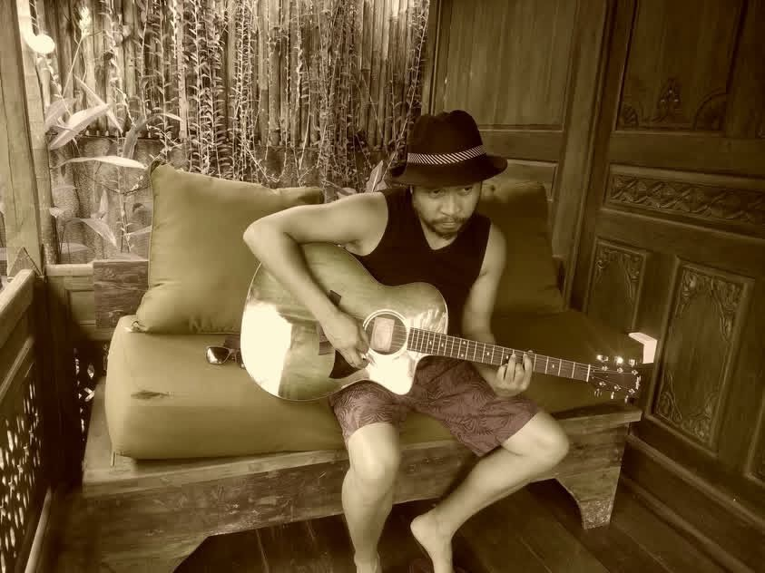

Original Worship
Original Christian music written to glorify God — from the first lyric to the finished recording and the visual story that carries it.
“Sing to the Lord a new song; sing to the Lord, all the earth.” Psalm 96:1
Songs written from the heart to glorify God — worship and original compositions meant to lift, encourage, and point listeners toward Him. Faith is the foundation of every lyric and every melody.
Full production from the ground up — recording, arranging, mixing, and shaping a song into its finished form. Whether it's an original track or a collaboration, every detail serves the heart of the song.

Bringing songs to life on screen. Cinematic music videos that pair original music with visual storytelling — shot, directed, and edited with the same care that goes into the music itself.